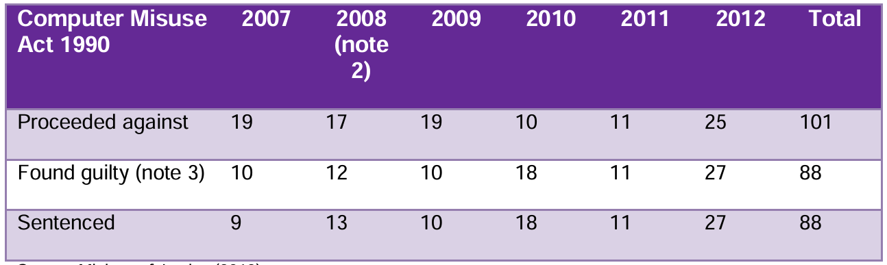
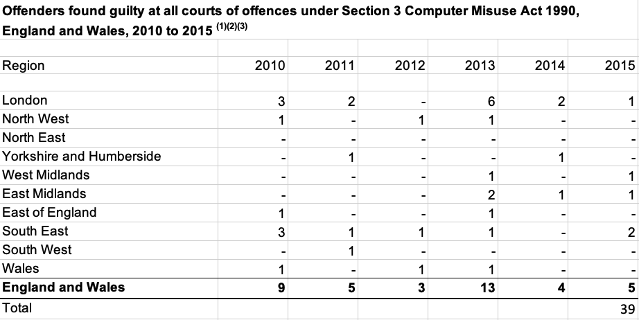

1. Introduction
Social engineering is not a cyber-attack but a method of infiltrating an individual’s or entity's information. It entails deceptively exploiting and psychologically manipulating a victim to acquire confidential information, enabling threat actors to gain unauthorised access to a system (Carnegie Mellon University, 2023; Cisco, 2024; Kaspersky, 2020).
The term social engineering is not a new construct of the 20th century; the historical term from 1899 defined it as lectures to address modern social issues. The term now means what useful information hackers can obtain that fits its intended purpose (Oxford English Dictionary, 2023b).
Despite the shift in terminology, malicious actors employ social engineering tactics to manipulate their targets. In the UK, 30% of internet users have fallen victim to email fraud, while 12% have reported encountering online scams or fraudulent activities through social media news feeds. Impersonation accounts for 51% of online fraud and scams. In January 2024, 58% of large UK companies faced cybercrime, with medium-sized businesses being impacted at a rate of 45% (IBM, 2024; Petrosyan, 2023a; Petrosyan, 2023b; Petrosyan, 2024b; Pettit, 2023). The consequences of cyberattacks targeting institutions or individuals may include but are not limited to, data breaches, financial losses, erosion of trust, reputational harm, and regulatory penalties due to non-compliance with the Data Protection Act 2018 (ICO, 2023).
According to the Office for National Statistics (2018), a survey analysing fraud and computer misuse found that individuals are ten times more likely to fall victim to fraud and computer misuse than to theft and thirty-five times more likely to be victims than to robbery. This highlights the significant impact of cybercrime on individuals and society’s lives.
This report explores the implications of social engineering in the United Kingdom, examining its repercussions for individuals and enterprises. It also discusses current legislation and frameworks within the country's national law.
2. The manifestation of Social Engineering within the UK.
Threat actors exploit individuals or organisations primarily for financial gain or to inflict reputational damage. State-sponsored attacks, often characterised by their objectives of intelligence gathering or the instigation of public humiliation, exemplify this phenomenon (Fortinet, 2024). Threat actors employ sophisticated tactics and use various technologies to accomplish their objectives; this may include brute force attacks aimed at uncovering system passwords; however, social engineering techniques are designed to manipulate victims into disclosing their credentials, collecting and gathering information, which hackers subsequently exploit (Salama et al., 2023).
Various forms of social engineering attacks exist; this report will not delve extensively into all of them; however, a term frequently encountered in discussions of social engineering attacks is Phishing. According to the Oxford English Dictionary (2023a), “phishing” refers to impersonating an organisation or individual to elicit personal information from unsuspecting victims. These techniques are typically executed by disseminating emails that falsely represent a legitimate agency or senior authority within a corporation. Such communications frequently convey a sense of urgency, compelling the recipient to act swiftly and without hesitation, often acting discreetly. This category of phishing emails can potentially escalate into more severe incidents, including ransomware attacks, data breaches, and malware deployment, among other risks. Spear phishing is a method of cyberattack that explicitly targets individuals within an organisation who possess elevated access to the company's information systems, often aiming to breach the security of high-ranking officials such as the CEO. However, social engineering has undergone significant evolution, now encompassing various direct interpersonal interactions, telephonic communications, and even tactics such as dumpster diving, all employed to acquire sensitive information illicitly (Cisco, 2024; NIST, 2015; Salama et al., 2023; Salahdine and Kaabouch, 2019; Syafitri et al., 2022).
According to Gov.UK (2024), a significant proportion of enterprises in the UK, precisely 84%, have reported experiences of phishing attacks. Furthermore, a similarly elevated percentage of charitable organisations, totalling 83%, have acknowledged encountering fraudulent email communications. This evidence highlights the pervasive and critical nature of phishing threats as a pressing national issue; in 2023, malicious actors endeavoured to infiltrate a nuclear waste facility in the UK by utilising LinkedIn to identify personnel associated with the organisation. The company in question recognised several phishing attempts and maintained a state of vigilance (Lawson and Isaac, 2023). This incident emphasises the ease with which threat actors can acquire the names of employees from any organisation with a social media presence.
3. Addressing Social Engineering
Identifying potential social engineering threats presents significant complexities, primarily due to the methodologies employed by malicious actors to exploit the psychosocial vulnerabilities inherent in human behaviour. However, various countermeasures can be implemented by individuals and organisations alike to mitigate these risks. According to Birthriya et al. (2024), providing educational training constitutes a fundamental component in equipping personnel with the skills necessary to identify and assess the potential occurrences or attempts of social engineering attacks. Salama et al. (2023) substantiate this assertion by emphasising the significance of understanding cyber-attacks and outlining appropriate responses when individuals encounter such threats. Cyber-attack education encompasses critical practices such as refraining from engaging with links embedded within emails or messages unless their authenticity has been established. This precaution is particularly pertinent, as numerous phishing emails contain malicious URLs that redirect unsuspecting users to websites harbouring malware. Other educational methodologies emphasise the significance of implementing multifactor authentication (MFA). This process introduces an additional layer of security to systems by necessitating a secondary device, such as a personal mobile phone, to verify user login. Implementing intricate password protocols, accompanied by a password manager, significantly enhances security against unauthorised access by cyber intruders. Employing non-dictionary-based passwords that incorporate a diverse array of special characters and both uppercase and lowercase letters, in conjunction with numerical digits, provides a robust defence mechanism (Salama et al., 2023). This is further supported by Clark (2024), who states that implementing essential procedures to achieve appropriate “Cyber Hygiene” is instrumental in mitigating the risk of cyberattacks. This encompasses the utilisation of MFA and the maintenance of complex passwords. Clark (2024) also suggests reducing administrative access to a limited number of individuals. Additionally, it is imperative to ensure that security updates are systematically applied to relevant systems whenever feasible.
Additional mitigation measures include the systematic implementation of regular security audits. Such audits are critical in identifying potential vulnerabilities while ensuring compliance with established standards and promoting best practices. A pertinent illustration of this is ISO/IEC 27001, an international framework designed to enhance and sustain the efficacy of information security management systems (ISMS); the framework facilitates ongoing monitoring and auditing of corporate operations to ensure adherence to compliance standards and legal regulations (Bonnie and Gutierrez, 2024; Hanna, 2023; IT Governance, 2016).
The report will not analyse the diverse cybersecurity strategies; nonetheless, it is imperative to recognise that organisations may adopt several supplementary strategies to bolster their security measures. These include monitoring network access to ensure that only authorised personnel are granted entry. Additionally, utilising a reliable virtual private network (VPN) is advisable for individuals working remotely to safeguard their online activities and maintain anonymity. Furthermore, individuals should exercise caution regarding whom they accept as connections on social media platforms, as many threat actors exploit these platforms to manipulate individuals into disclosing personal information (Salama et al., 2023).
4. The effectiveness of national law
In the UK, the National Cyber Security Centre (NCSC) plays an essential role in disseminating essential information to businesses and the public about the challenges posed by cybercrime, including cyber awareness, steps to cyber security, frameworks, defence, and legislation development. The NCSC collaborates extensively with various agencies, both domestically and internationally, as well as with law enforcement bodies, to address the escalating threat of cybercrimes and cyberattacks (Clark, 2024; Gov.UK, 2019; ICO, 2018; NCSC, 2019).
The UK has many legislative measures to combat cybercrime and employs extensive legislative frameworks. However, given the intricate nature of these laws, this report will not thoroughly examine all pertinent statutes, as such an endeavour would surpass the limits of one's expertise.
The following delineates the UK's legal framework for safeguarding individuals and organisations against social engineering tactics.
- Computer Misuse Act 1990
- Communications Act 2003
- Telecommunications (Security) Act 2021
- Privacy and Electronic Communications Regulations 2003
- Network and Information Systems Regulations 2018
- Data Protection Act 2018
(Gov.UK, n.d.)
The Crown Prosecution Service (2019) identifies the Computer Misuse Act 1990 (CMA1990) as the principal legislative framework for combating offences related to computer systems. Bishop (2020) further articulates that the Computer Misuse Act represents a cyber-dependent crime characterised by its specific application in digital offences. McGuire and Dowling (2013a) clarify that those cyber-dependent crimes, frequently termed 'pure’ cybercrimes, involve offences committed through one computer against another. Such illicit activities may include the propagation of viruses or malware, approaches that require either unauthorised access to computer systems or the subversion of network integrity. However, it is imperative to recognise that social engineering does not involve a direct threat actor seeking to infiltrate another computer system; hence, categorising it as a cyber-dependent crime may be misrepresentative. While the Computer Misuse Act designates such actions as cyber-dependent crimes, social engineering employs various tactics to extract information from targeted individuals. These methods include reconnaissance through social media and practices such as dumpster diving, which aim to accumulate intelligence on potential victims to facilitate future cyberattacks.
According to McGuire and Dowling (2013b), social engineering constitutes a distinct category of cyber-enabled crime. These offences are fundamentally rooted in traditional criminal behaviour, do not inherently depend on information and communication technology (ICT), and have the potential to evolve into computer-to-computer attacks.
Despite the categorisation of social engineering, the Crown Prosecution Service (2019) states that individuals engaged in social engineering tactics may also be prosecuted under the Data Protection Act 2018 (DPA2018). This prosecution is facilitated under Sections 170 to 173 of UK legislation, which addresses offences related to personal data, including the unlawful acquisition of personal data, the re-identification of de-identified data, the practical validation of the obtained data, and the modification of personal data (Government of UK, 2018). Individuals or entities engaged in the deliberate acquisition of personal data without consent, potentially profiting from the sale of such data, or disclosing the data to a third party thereby constitute a violation of the Data Protection Act.
According to McGuire and Dowling (2013a), 101 were initially prosecuted for CMA1990 between 2007 and 2012, and 88 were ultimately sentenced under CMA1990, as shown in Figure 1. McGuire and Dowling (2013a) contend that these figures represent a notably low conviction rate, which they attribute to offenders often facing prosecution for other cyber-related offences, including violations under the Fraud Act 2006, for which data are unavailable. According to the UK government database Gov.UK (2017), data from 2010 to 2016 indicate that 39 were adjudicated guilty of the offence relating to CMA1990 under Section 3, as shown in Figure 2.
Figure 1: Data showing the number of proceedings against CMA1990 from 2007 to 2012 (McGuire and Dowling, 2013a).
Figure 2: Data showing those found guilty under Section 3 of the CMA1990 from 2010 to 2012 (Gov.UK, 2017).
Despite the variance in the temporal scope of the datasets, the conviction rate remains comparatively low. Data from 2010 to 2012 reveal discrepancies between the two datasets; while the information is sourced from the UK government, it needs to provide the precise number of actual convictions for the CMA, which raises the question of whether the CMA is an effective legislation, and does it cover the cyber-enabled crime which social engineering is categorised in. Society has witnessed significant technological advancements since the Computer Misuse Act was established over thirty years ago. Despite several amendments, the legislation has not kept pace with the rapidly changing dynamics of social engineering attacks and the broader spectrum of cyberattacks prevalent today. According to Gov.UK (2023), they have acknowledged that a comprehensive review is necessary, as the CMA1990 fails to address several offences. It is essential to equip law enforcement and specialised agencies with the requisite resources to investigate threat actors' activities effectively engaged in cyberattacks; this is further supported by the House of Commons (2013), which states that one of the key strategies is for the government to understand e-crime and improve its investigative practices.
5. Investigative tools
The conventional investigative approach in the UK adheres to the ACPO (2005) framework, which aims to equip investigators with the skills and knowledge necessary to foster a coherent mindset in pursuing justice for traditional crimes. This framework is valuable in apprehending offenders and ensuring a systematic investigation methodology (Hunton, 2011; National Centre for Policing Excellence, 2005). According to Nock (2021), the conventional investigatory framework demonstrates limited efficacy in comprehensively addressing online cybercrime, primarily due to the unique environment in which such offences transpire; notably, the ACPO framework fails to encompass e-crime or cybercrime comprehensively. A notable challenge encountered by law enforcement agencies pertains to the anonymity of threat actors within the digital landscape, which complicates the process of evidentiary collection. These individuals can obscure their IP addresses and utilise encrypted browsers like Tor. Moreover, the trans-jurisdictional nature of online criminal activities exacerbates the difficulties law enforcement faces, as individuals operating across multiple legal jurisdictions may commit offences.
Nock (2021) posits that approximately three-quarters of law enforcement officers contend that specialised teams should investigate cybercrime. This assertion is primarily attributed to the officers' perceived deficiencies in the requisite skills and knowledge for effectively addressing cybercrime. Also, it is essential to note that Nock’s (2021) analysis primarily focuses on law enforcement agencies within the US. However, online cybercrime has a transnational dimension, impacting nations worldwide. Conversely, Hunton (2011) asserts that cybercrime investigation practices remain formative. Technical investigative methodologies constantly evolve in response to the escalating threat of cybercrime.
Several tools are available in cybercrime investigation, notably open-source intelligence (OSINT). This encompasses a compendium of publicly accessible open-source data (OSD) supporting investigators’ decision-making processes. Such data encompass an extensive array of governmental datasets and statistics, which can effectively assist in identifying threat actors and monitoring their online activities (Clarke, 2022). Other instruments employed in this context encompass digital forensic software specifically engineered to retrieve deleted files and social media analysis tools that facilitate monitoring potential threat actors. A range of additional tools are available; however, a comprehensive discussion of these tools is beyond the purview of this report (CyberTalents, 2023).
Although these tools are available for law enforcement agencies, they appear to exemplify an ad hoc approach to addressing the complexities of cybercrime. It is essential to critically examine the admissibility of the collected evidence in court, particularly considering the methodologies employed in data collection and handling.
ISO/IEC 27037:2012 is a universally applicable framework for all jurisdictions. It encompasses international standards serving comprehensive guidelines for identifying, collecting, handling, protecting, and preserving digital evidence essential for judicial proceedings (Iso.org, 2020). However, Veber and Smutny (2015) assert that the existing documentation framework is inadequately equipped to address present demands; notably, this inadequacy is exemplified by non-experts' participation and inconsistencies in evidence management. This is further supported by Sudyana et al. (2019), who state that enhancements are necessary to fulfil all specified product requirements.
6. Social Perception
The report has addressed the ramifications of social engineering attacks, encompassing data breaches, financial detriment, and reputational impairment. The dynamic threat landscape increasingly associated with social engineering, particularly email-based attacks, illustrates a significant escalation in risk. According to Petrosyan (2024a), global organisations experienced a notable 41% surge in the frequency of email-related attacks in 2023, alongside a substantial 38% rise in the occurrence of more sophisticated attack methodologies, highlighting a growing imperative in cybersecurity. Salahdine and Kaabouch (2019) argue that human factors represent a critical vulnerability and play an instrumental role in facilitating security breaches, which are attributable to the psychological manipulation tactics employed by malevolent actors. This assertion is further corroborated by Amorosa and Yankson (2023), who posit that advanced social engineering tactics lead to unintentional errors, highlighting the importance of education and awareness in mitigating such vulnerabilities.
An in-depth analysis of the complexities associated with these malicious actors exceeds the constraints of this report and necessitates additional scholarly research. However, it has been observed that these actors may consist of individual perpetrators or organised gangs with the primary objective of inflicting harm. Their motivations can be diverse, encompassing financial incentives, data exploitation, and state-sponsored (Sophos, 2024).